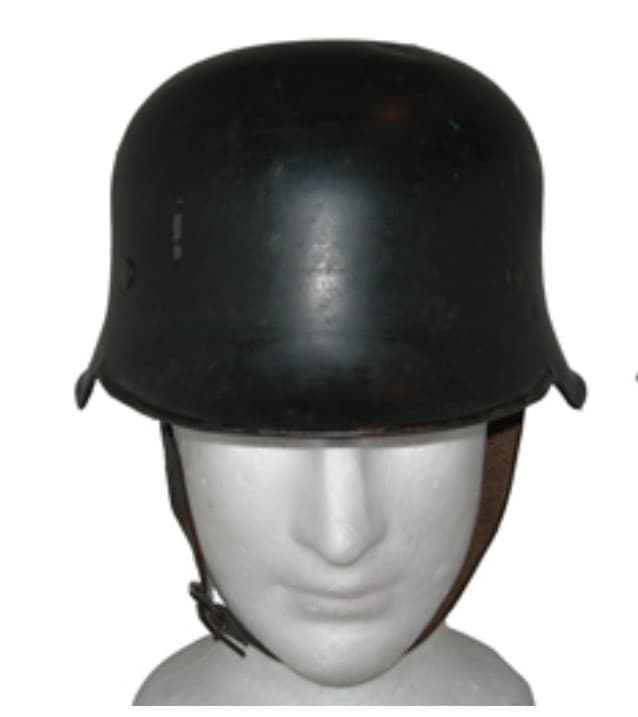
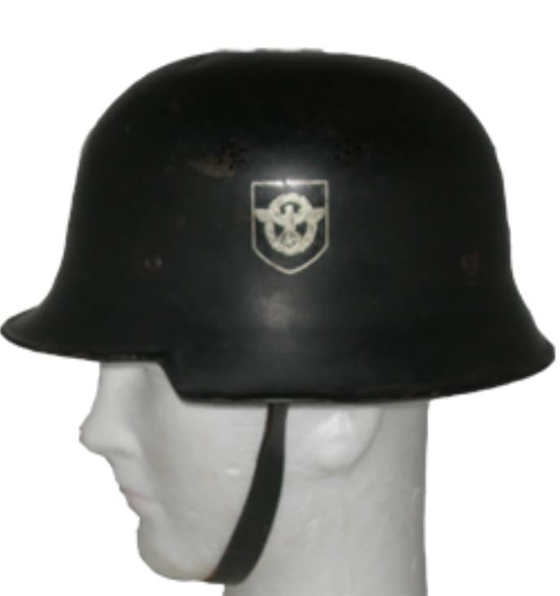
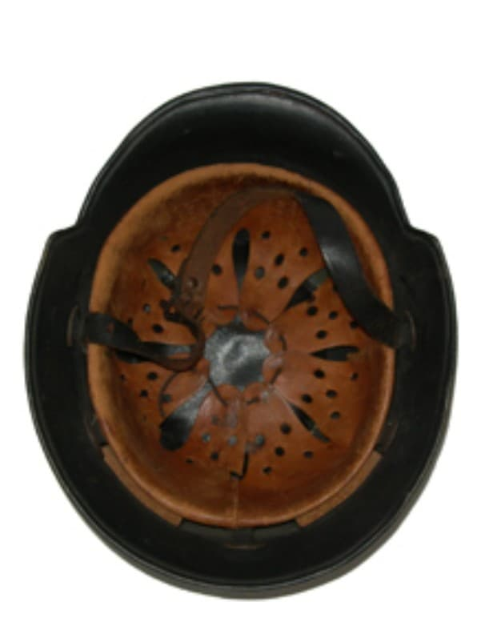

Le casque Modèle 34 est un casque de service et de protection civile utilisé par la Police et les unités de Feuerschutz / Feuerwehr en Allemagne. Contrairement aux casques M35/M40/M42 de la Wehrmacht, il n’est pas destiné au combat sur le front, mais au maintien de l’ordre et à la lutte contre l’incendie.
Sa silhouette plus haute, ses aérations latérales et parfois sa crête supérieure en font un modèle facilement identifiable.

Le M34 se caractérise par une coque plus fine que les casques militaires, des aérations latérales (trous ou fentes) et une forme plus verticale. Il est souvent peint en noir ou en vert foncé, selon l’usage Police ou Feuerschutz.
Les versions Feuerschutz peuvent présenter une crête métallique sur le dessus, typique des casques de pompiers. Les versions Police portent des insignes spécifiques (aigle, couronne, feuilles de chêne).


Le M34 est porté durant :
Il accompagne la population dans le contexte de guerre totale, mais reste un casque de service, distinct des casques de combat.